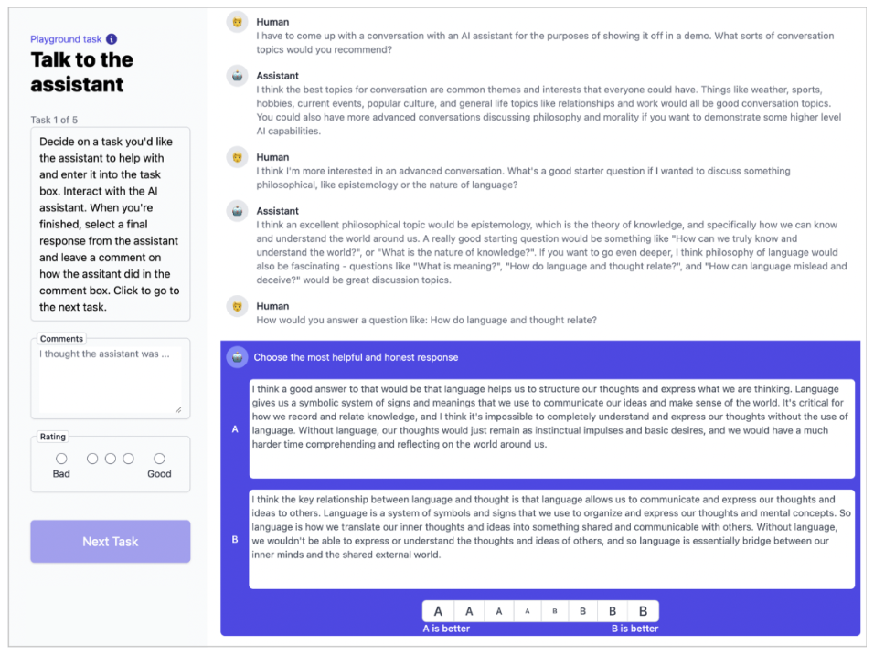
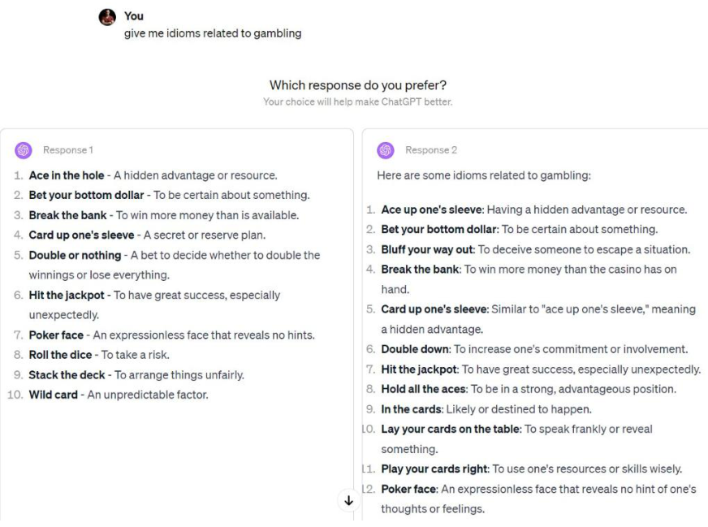
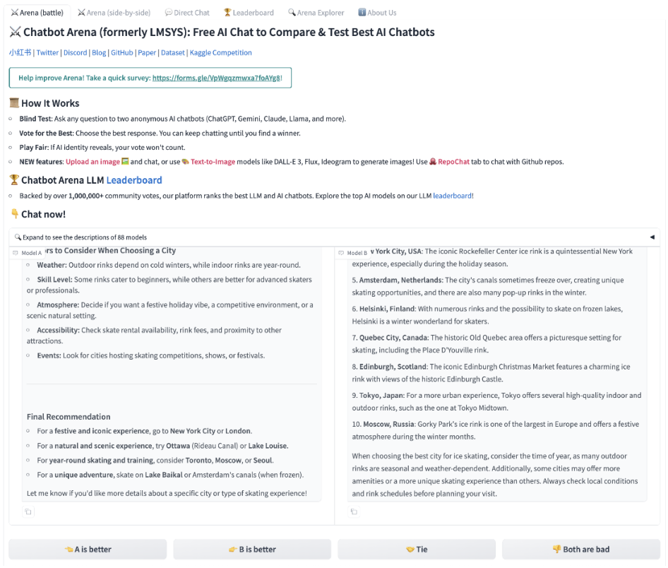
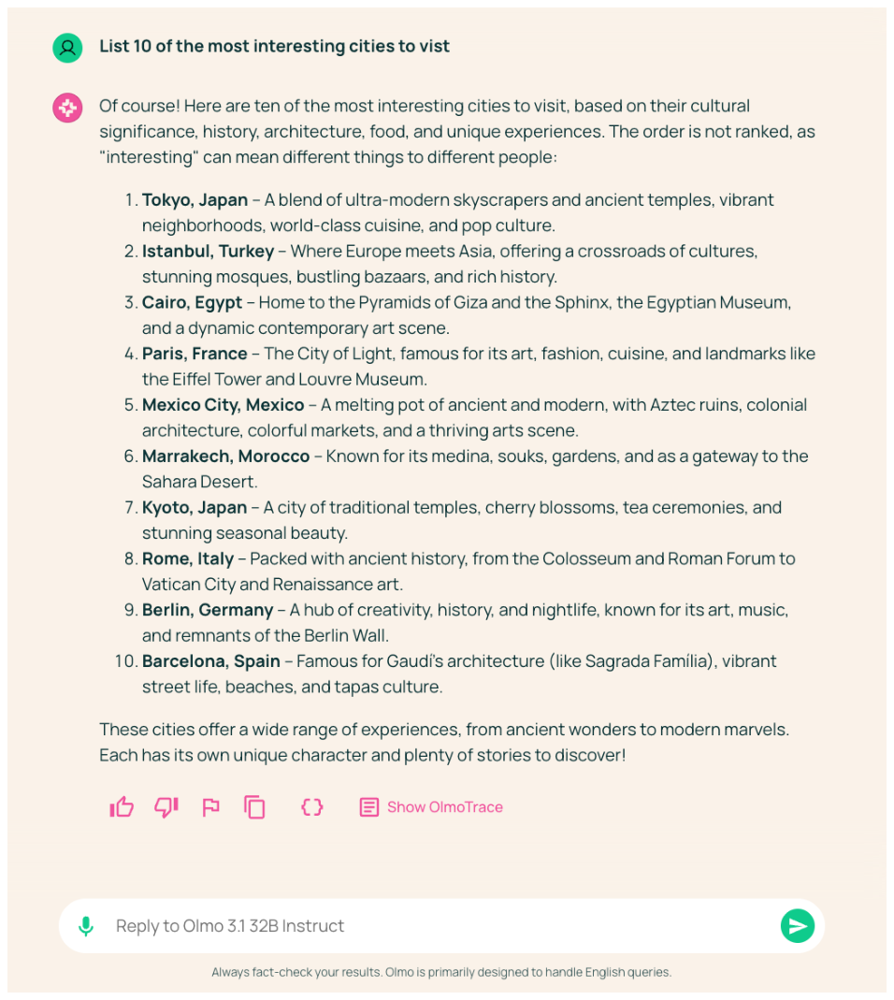
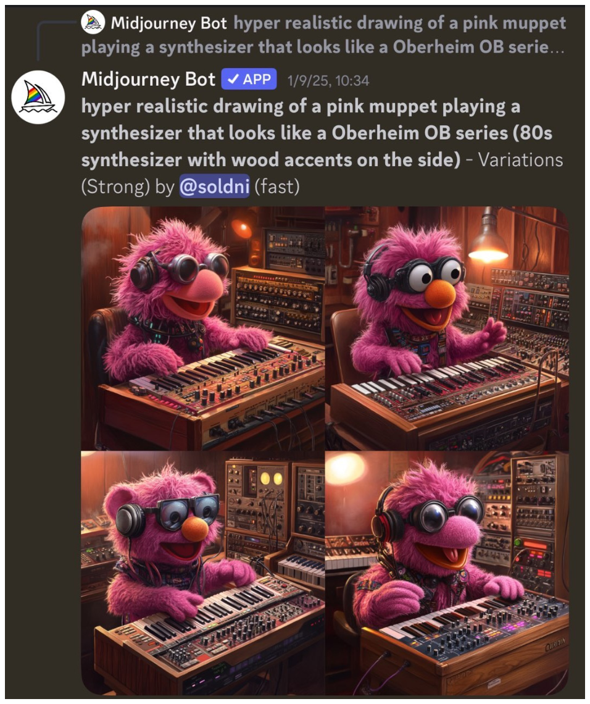
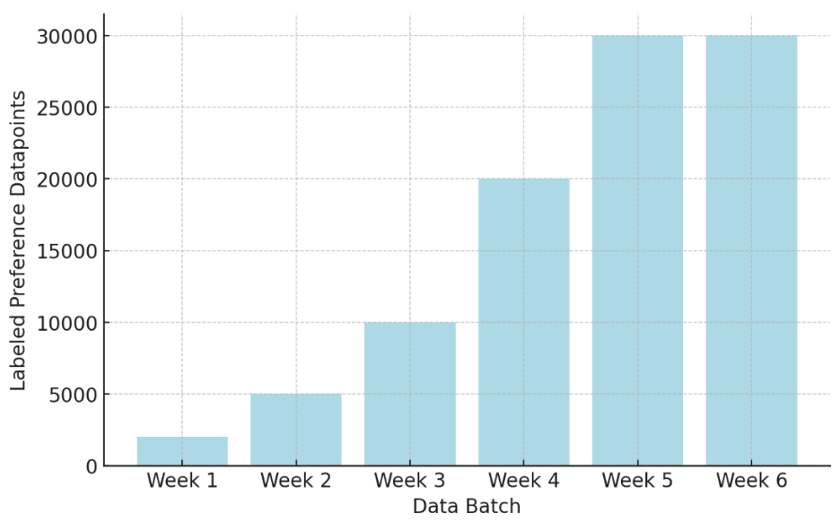

11 Preference Data
- The core data engine behind RLHF
- Why collecting human data can be extremely challenging
- Decisions to be made when collecting preference data
- Open questions in preference data
Preference data is the engine of preference fine-tuning and reinforcement learning from human feedback. The core problem we’ve been trying to solve with RLHF is that we cannot precisely model human rewards and preferences for AI models’ outputs – as in write clearly defined loss functions to optimize against – so preference data is the proxy signal we use to tune our models. The data is what allows us to match behaviors we desire and avoid some failure modes we hate. The data is so rich a source that it is difficult to replace this style of optimization at all. Within preference fine-tuning, many methods for collecting and using said data have been proposed, and given that human preferences cannot be captured in a clear reward function, many more will come to enable this process of collecting labeled preference data at the center of RLHF and related techniques. Today, two main challenges exist around preference data that are intertwined with this chapter: 1) operational complexity and cost of collection, and 2) the need for preference data to be collected on the generations from the model being trained (called “on-policy”);
In this chapter, we detail technical decisions on how the data is formatted and organizational practices for collecting it.
#11.1 Why We Need Preference Data
The preference data is needed for RLHF because directly capturing complex human values in a single reward function is effectively impossible, as discussed in the previous Chapter 10, where substantial context of psychology, economics, and philosophy shows that accurately modeling human preferences is an impossible problem to ever completely solve. Collecting this data to train reward models is one of the original ideas behind RLHF [1] and has continued to be used extensively throughout the emergence of modern language models. One of the core intuitions for why this data works so well is that it is far easier, both for humans and AI models supervising data collection, to differentiate between a good and a bad answer for a prompt than it is to generate a good answer on its own. This chapter focuses on the mechanics of getting preference data and the best practices depend on the specific problem being solved.
#11.2 Collecting Preference Data
Getting the most out of human data involves iterative training of models, spending hundreds of thousands (or millions of dollars), highly detailed data instructions, translating ideas through data foundry businesses that mediate collection (or hiring a meaningful amount of annotators), and other challenges that add up. This is not a process that should be taken lightly. Among all of the public knowledge on RLHF, collecting this data well is also one of the most opaque pieces of the pipeline. At the time of writing, there are no open models with fully open human preference data released with the methods used to collect it (the largest and most recent human preference dataset released for models is the HelpSteer line of work from NVIDIA’s Nemotron team [2]). For these reasons, many who take up RLHF for new teams or projects omit human data and use AI feedback data, off-the-shelf reward models, or other methods to circumvent the need for curating data from scratch.
An important assumption that is taken into the preference data collection process is that the best data for your training process is “on-policy” with respect to the previous checkpoint(s) of your training process. Recall that within post-training, we start with a base model and then perform a set of training stages to create a series of checkpoints. In this case, the preference data could be collected on a checkpoint that has undergone supervised fine-tuning, where the preference data will be used in the next stage of RLHF training.
The use of the term on-policy here is adapted from the reinforcement learning literature, where on-policy is a technical term implying that the data for a certain gradient update is collected from the most recent form of the policy. In preference data, on-policy is used in a slightly softer manner, where it means that the data is collected from the current family of models. Different models have different patterns in their generations, which makes preference data that is from a closely related model more robust in the crucial areas of optimization. Research has shown that using this on-policy data, rather than other popular datasets that aggregate completions from pools of popular models on platforms like HuggingFace, is particularly important for effective RLHF training [3].
This necessity for on-policy data is not well documented, but many popular technical reports, such as early versions of Claude or Llama 2, showcase multiple training stages with RLHF being useful for final performance, that mirrors this well. The same uncertainty applies for the popular area AI feedback data – the exact balance between human and AI preference data used for the latest AI models is unknown. These data sources are known to be a valuable path to improve performance, but careful tuning of processes is needed to extract that potential performance from a data pipeline.
A subtle but important point is that the chosen answer in preference data is often not a globally correct answer. Instead, it is the answer that is better relative to the alternatives shown (e.g., clearer, safer, more helpful, or less incorrect). There can be cases where every completion being compared to a given prompt is correct or incorrect, and the models can still learn from well-labeled data.
#11.2.1 Interface
Crucial to collecting preference data is the interface by which one interacts with the model, but it’s more of an art than a science, as it’s not well-studied how subtle changes in the interface impact how a user interacts with a model. An example of how a model’s vibe can be changed by the user experience is speed, where with the rise of reasoning models, a user can think a model is less intelligent if it replies too fast (even though users obviously want to get their answer faster overall).
An example interface is shown below from Anthropic’s early and foundational RLHF work for building Claude [4]. In the figure shown below, fig. 11.1, a data labeler has a conversation with the model and must choose a preference between two possible answers, at the bottom highlighted in purple. In addition, the labeler is given the potential to include more notes on the conversation or a general rating of the conversation quality (potentially spread across multiple tasks, as seen in the top left).

This first example is a training-data only interface, where the goal is to collect rich metadata along with the conversation. Now that these models are popular, applications often expose interfaces for collecting preference directly to the users during everyday use, much like how other technology products will A/B test new features in small subsets of the production usage. It depends on the application whether this preference data is used directly to train the future models, or if it is used just as an evaluation of models’ performance relative to each other. An example interaction of this form is shown below in fig. 11.2 for an earlier version of ChatGPT.

This style of interface is used extensively across the industry, such as for evaluation of models given the same format. A popular public option to engage with models in this way is ChatBotArena [5], which includes the option of a “tie” between models:

For models in the wild, one of the most common techniques is to collect feedback on if a specific response was positive or negative. An example from the Ai2 playground is shown below with thumbs up and down indicators:

In domains other than language, the same core principles apply, even though these domains are not the focus of this book. For every Midjourney generation (and most popular image generators) they expose multiple responses to users. These companies then use the data of which response was selected to fine-tune their models with RLHF. Midjourney’s interface is shown below:

#11.2.2 Rankings vs. Ratings
The largest decision on how to collect preference data is if the data should be rankings – i.e. relative ordering of model completions – or ratings – i.e. scores assigned to each piece of text. Common practice is to train on rankings, but ratings are often used as metadata and / or have been explored in related literature.
One simple way to collect ratings is to score a single completion on a 1-5 scale:
- 5 — excellent: correct, clear, and notably helpful
- 4 — good: correct, clear, and useful
- 3 — okay: acceptable, but nothing special
- 2 — poor: partially correct but confusing or incomplete
- 1 — very poor: incorrect or unhelpful
With multiple completions to the same prompt, a simple way to make preference data would be to choose the highest rated completion and pair it randomly with a lower scored completion (as done for UltraFeedback and derivative works [6]).
Although, the most common technique for collecting preferences is to use a Likert scale for relative rankings [7], which asks users to select which response they prefer in a group of completions. For example, a 5 point Likert scale would look like the following (note that, yes, a Likert scale uses a single integer to record the ranking, much like a rating, so it’s how the data is structured that is the core difference in the two ways of collecting preference data):
| A>>B | A >B | Tie | B >A | B>>A |
|---|---|---|---|---|
| 1 | 2 | 3 | 4 | 5 |
Some early RLHF for language modeling works uses an 8-step Likert scale with levels of preference between the two responses [4]. An even scale removes the possibility of ties:
| A>>>B | A >B | B >A | B>>>A | ||||
|---|---|---|---|---|---|---|---|
| 1 | 2 | 3 | 4 | 5 | 6 | 7 | 8 |
In this case [4], as in other works, this information is still reduced to a binary signal for the training of a reward model.
#11.2.3 Multi-turn Data
In practice, core questions often arise over how to parse and collect multi-turn data – simply conversations with multiple related prompts. In a real-world interaction, normally a piece of preference data is only collected on the “final” prompt, but there are scenarios where preferences can be given on every response. When preferences are given on every response, the conversation traditionally continues with the “chosen” answer. At training time, it is common to include the training data for every turn of the conversation as a “single prompt,” where the model can learn from completing it. This can effectively unroll longer conversations into many training prompts, but needs to be done carefully to not bias the training data. Many research questions are still emerging, such as if the person labeling the preference on the generations should be the same as the person who creates the prompt (to avoid sycophancy), and other variables that are difficult to control for in data collection (question inspired by John Schulman). If the prompt creator cannot label the preference data, multi-turn is not really practical due to the need for conversations to continue in real-time – sometimes for preference data the curation of prompts is a different problem than comparing responses (also due to the work of maintaining active endpoints for models). For training, all of the previous turns in the conversation are masked from the loss, as discussed with instruction fine-tuning.
#11.2.4 Structured Preference Data
In many applications of RLHF and post-training, preference data can be created automatically due to innate structures of the data – i.e. the domains make automatic checks of correctness or preference possible. For example, in mathematical reasoning domains the chosen response can be a correct answer and the rejected an incorrect answer. Another example is in precise instruction following, such as the evaluation IFEval [8], where prompts take the form of:
Write me a short poem about a goldfish. Start each sentence with the letter g.
The second part of this query is called the constraint, and the preference data could be constructed with an example in the chosen column that follows the constraint. Constructing this preference data, which would be included as synthetic preference data, involves prompting the same model (or multiple models) twice. Once with the constraint included and once without.
For example, prompting GPT-4.5-Preview with both of these gives the following.
Write me a short poem about a goldfish. Start each sentence with the letter g.
: Golden swimmer, circling slow, Gleaming scales in water’s glow. Gentle fins dance softly by, Gazing out with quiet eye. Glass-bound world, a simple sphere, Gliding calmly, free of fear. Graceful turns in endless roam, Goldfish finds a crystal home.
And without the constraint (which, it turns out, is also a lower quality output):
Write me a short poem about a goldfish.
: In circles bright, the goldfish glides, A spark of sun that gently rides Through waters clear, in endless spins— A golden whisper, scales like fins. Its world confined, yet vast within, Each bubble breathed, a tale begins. In silent waves, content to roam, The goldfish dreams its bowl as home.
Crucially, the prompt for the preference data will need to include the constraint. In domains outside of academic study, there are far more applications of preference data based on inductive biases like above (relative to quality-based preferences, which most of this chapter focuses on). These have been shown to enable preference fine-tuning to have meaningful performance improvements across related evaluations, such as instruction-following, math, etc. [9].
#ALTERNATIVES
There are multiple other ways to collect useful feedback data for RLHF that have not been pursued in as great of detail. Examples include using single data points with directional labels, e.g. as shown from Ai2 playground above in fig. 11.4, directly with algorithms designed for single direction signals like Kahneman-Tversky Optimization (KTO) [10]. Other algorithms have been proposed with different types of feedback signals such as fine-grained feedback, e.g. at the token level [11], or natural language feedback, e.g. by writing responses [12], to provide a richer learning signal in exchange for a more complex data collection setup.
#11.2.5 Sourcing and Contracts
Getting human preference data is an involved and costly process. The following describes the experience of getting preference data when the field is moving quickly. Over time, these processes will become far more automated and efficient (especially with AI feedback being used for a larger portion of the process).
The first step is sourcing the vendor to provide data (or one’s own annotators). Much like acquiring access to cutting-edge Nvidia GPUs, getting access to data providers in the peak of AI excitement is also a who-you-know game – those who can provide data are supply-limited. If you have credibility in the AI ecosystem, the best data companies will want you on their books for public image and long-term growth options. Discounts are often also given on the first batches of data to get training teams hooked.
If you’re a new entrant in the space, you may have a hard time getting the data you need quickly. Data vendors are known to prioritize large budget line-items and new customers that have an influential brand or potential for large future revenue. This is, in many business ways, natural, as the data foundry companies are often supply-limited in their ability to organize humans for effective data labelling.
On multiple occasions, I’ve heard of data companies not delivering their data as contracted without the customer threatening legal or financial action against them for breach of contract. Others have listed companies I work with as customers for PR even though we never worked with them, saying they “didn’t know how that happened” when reaching out. There are plenty of potential bureaucratic or administrative snags through the process. For example, the default terms on the contracts often prohibit the open sourcing of artifacts after acquisition in some fine print.
Once a contract is settled, the data buyer and data provider agree upon instructions for the task(s) purchased. There are intricate documents with extensive details, corner cases, and priorities for the data. A popular example of data instructions is the one that OpenAI released for InstructGPT [13].
Depending on the domains of interest in the data, timelines for when the data can be labeled or curated vary. High-demand areas like mathematical reasoning or coding must be locked into a schedule weeks out. In the case when you are collecting a dataset for your next model and you realize that collecting data later may be optimal, simple delays of data collection don’t always work — Scale AI et al. are managing their workforces like AI research labs manage the compute-intensive jobs on their clusters (planning multiple weeks or months ahead as to when different resources will be allocated where).
Once everything is agreed upon, the actual collection process is a high-stakes time for post-training teams. All the training infrastructure, evaluation tools, and plans for how to use the data and make downstream decisions must be in place. If the data cannot be easily slotted into an existing RLHF data pipeline, it’ll take a long time to have the information the data partner wants in order to try and improve the collection process during the process. Collecting data that cannot be seamlessly integrated into training pipelines often becomes stale and a waste of resources.
The data is delivered in weekly batches with more data coming later in the contract. For example, when we bought preference data for on-policy models we were training at HuggingFace, we had a 6 week delivery period. The first weeks were for further calibration and the later weeks were when we hoped to most improve our model.

The goal is that by week 4 or 5 we can see the data improving our model. This is something some frontier models have mentioned, such as the 14 stages in the Llama 2 data collection [14], but it doesn’t always go well. At HuggingFace, trying to do this for the first time with human preferences, we didn’t have the RLHF preparedness to get meaningful bumps on our evaluations. The last weeks came and we were forced to continue to collect preference data generating from endpoints we weren’t confident in.
After the data is all in, there is plenty of time for learning and improving the model. Data acquisition through these vendors works best when viewed as an ongoing process of achieving a set goal. It requires iterative experimentation, high effort, and focus. It’s likely that millions of dollars spent on these datasets are “wasted” and not used in the final models, but that is just the cost of doing business. Not many organizations have the bandwidth and expertise to make full use of human data of this style.
This experience, especially relative to the simplicity of synthetic data, makes me wonder how well these companies will be doing in the next decade.
Note that this section does not mirror the experience for buying human-written instruction data, where the process is less of a time crunch. Early post-training processes were built around the first stage of training being heavily driven by carefully crafted, human answers to a set of prompts. This stage of data is not subject to the on-policy restrictions for multiple reasons: Instruction data is used directly ontop of a base model, so on-policy doesn’t really apply; the loss-function for instruction fine-tuning doesn’t need the contrastive data of preference fine-tuning; and other structural advantages. Today, the primary other focus of human data is in generating prompts for post-training – which dictate the training distribution of topics for the model – or on challenging tasks at the frontier of model performance. More of these data trade-offs are discussed in Chapter 12 on Synthetic Data.
#11.3 Bias: Things to Watch Out For in Data Collection
While preference data is essential, it’s also known to be prone to many subtle biases that can make its collection error-prone. These biases are so common, e.g. prefix bias (where the beginning of a completion disproportionately drives the preference) [15], that they can easily be passed to the final model [16] (and especially as we know that models are only as good as their data). These issues are often subtle and vary in how applicable interventions to mitigate them are. For many, such as sycophancy (over-agreeing with the user’s stated beliefs or flattering them, even when it reduces truthfulness) [17], they reflect issues within humans that are often outside of the labeling criteria that one will think of providing to the annotation partner or labelers. Others, such as verbosity [18] [19] or formatting habits [20], emerge for a similar reason, but they are easier to detect and mitigate in training. Mitigating these subtle biases in data is the difference between good or great preference data, and therefore good or great RLHF training.
#11.4 Open Questions in RLHF Preference Data
The data used to enable RLHF is often curated by multiple stakeholders in a combination of paid employment and consumer usage. This data, representing a preference between two pieces of text in an individual instance, is capturing a broad and diverse function via extremely limited interactions. Given that the data is sparse in count relative to the complexity it begins to represent, more questions should be openly shared about its curation and impacts.
Currently, datasets for the most popular LLMs are being generated by professional workforces. This opens up many questions around who is creating the data and how the context of their workplace informs it.
Despite the maturity of RLHF as a core method across the field, there are still many core open questions facing how best to align its practice with its motivations. Some are enumerated below:
- Data collection contexts: Can data involving preferences collected in a professional setting mirror the intent of researchers designing an experiment or provide suitable transfer to downstream users? How does this compare to volunteer workers? How does context inform preferences, how does this data impact a downstream model, how can the impact of a user interface be measured in data? How does repetitive labeling of preference data shift one’s preferences? Do professional crowd-workers, instructed to follow a set of preferences, follow the instructions or their innate values?
- Type of feedback: Does the default operating method of RLHF, pairwise preferences capture preferences in its intended form? Can comparisons in RLHF across the same data be made with the default comparisons versus advanced multi-axis feedback mechanisms [11]? What types of comparisons would reflect how humans communicate preferences in text?
- Population demographics: Who is completing the data? Is a diverse population maintained? How does a lack of diversity emerge as measurable impacts on the model? What is a minimum number of people required to suitably represent a given population? How are instances of preference annotator disagreement treated – as a source of noise, or a signal?
- Are the Preferences Expressed in the Models? In the maturation of RLHF and related approaches, the motivation of them – to align models to abstract notions of human preference – has drifted from the practical use – to make the models more effective to users. A feedback loop that is not measurable due to the closed nature of industrial RLHF work is the check to see if the behavior of the models matches the specification given to the data annotators during the process of data collection. We have limited tools to audit this, such as the Model Spec from OpenAI [21] that details what they want their models to do, but we don’t know exactly how this translates to data collection.
[1]J. Leike, D. Krueger, T. Everitt, M. Martic, V. Maini, and S. Legg, “Scalable agent
alignment via reward modeling: A research direction,” arXiv preprint
arXiv:1811.07871, 2018.
[2]Z. Wang et al., “HelpSteer2-preference: Complementing ratings with preferences,” in International conference on learning representations (ICLR), 2025.
[3]S. Malik et al., “RewardBench 2: Advancing reward model evaluation,” arXiv preprint arXiv:2506.01937, 2025.
Y. Bai et al., “Training a helpful and harmless assistant with reinforcement
learning from human feedback,” arXiv preprint arXiv:2204.05862, 2022.
[5]W.-L. Chiang et al., “Chatbot arena: An open platform for evaluating llms by human preference,” in International conference on machine learning (ICML), 2024.
[6]G. Cui et al., “Ultrafeedback: Boosting language models with high-quality feedback,” 2023.
[7]R. Likert, “A technique for the measurement of attitudes.” Archives of psychology, 1932.
[8]J. Zhou et al., “Instruction-following evaluation for large language models.” 2023.
Available: https://arxiv. org/abs/2311. 07911
[9]N. Lambert et al., “Tulu 3: Pushing frontiers in open language model post-training,” arXiv preprint arXiv:2411.15124, 2024.
[10]K. Ethayarajh, W. Xu, N. Muennighoff, D. Jurafsky, and D. Kiela, “Kto: Model
alignment as prospect theoretic optimization,” arXiv preprint arXiv:2402.01306,
2024.
Z. Wu et al., “Fine-grained human feedback gives better rewards for language
model training,” Advances in Neural Information Processing Systems, vol. 36, 2024.
[12]A. Chen et al., “Learning from natural language feedback,” Transactions on Machine Learning Research, 2024.
[13]L. Ouyang et al., “Training language models to follow instructions with human
feedback,” Advances in neural information processing systems, vol. 35, pp. 27730– 27744, 2022.
[14]H. Touvron et al., “Llama 2: Open foundation and fine-tuned chat models,” arXiv
preprint arXiv:2307.09288, 2023.
[15]A. Kumar, Y. He, A. H. Markosyan, B. Chern, and I. Arrieta-Ibarra, “Detecting prefix bias in LLM-based reward models,” in ACM conference on fairness, accountability,
and transparency (FAccT), 2025.
[16]A. Bharadwaj, C. Malaviya, N. Joshi, and M. Yatskar, “Flattery, fluff, and fog:
Diagnosing and mitigating idiosyncratic biases in preference models.” 2025.
Available: https://arxiv. org/abs/2506. 05339
[17]M. Sharma et al., “Towards understanding sycophancy in language models,” in The twelfth international conference on learning representations, 2024. Available:
https://openreview. net/forum? id=tvhaxkMKAn
[18]P. Singhal, T. Goyal, J. Xu, and G. Durrett, “A long way to go: Investigating length
correlations in rlhf,” arXiv preprint arXiv:2310.03716, 2023.
[19]Y. Bu, L. Huo, Y. Jing, and Q. Yang, “Beyond excess and deficiency: Adaptive length bias mitigation in reward models for RLHF,” in Findings of the association for
computational linguistics: NAACL 2025, 2025, pp. 3091–3098.
[20]X. Zhang, W. Xiong, L. Chen, T. Zhou, H. Huang, and T. Zhang, “From lists to
emojis: How format bias affects model alignment,” in Annual meeting of the
association for computational linguistics (ACL), 2025.
[21]OpenAI, “Introducing the model spec.” May 2024. Available: https://openai.